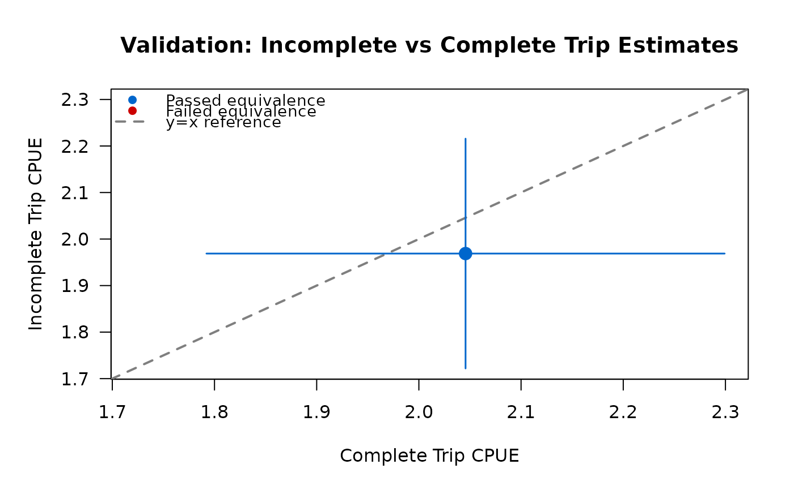

Validate incomplete trip estimates using TOST equivalence testing
Source:R/validate-incomplete-trips.R
validate_incomplete_trips.RdPerforms Two One-Sided Tests (TOST) to determine if incomplete trip CPUE estimates are statistically equivalent to complete trip estimates within a specified threshold. Returns validation results with recommendations for whether incomplete trips are appropriate for estimation in the given dataset.
Usage
validate_incomplete_trips(
design,
catch,
effort,
by = NULL,
variance = "taylor",
conf_level = 0.95,
truncate_at = 0.5
)Arguments
- design
A creel_design object with interviews attached via
add_interviews. Must include trip_status field to distinguish complete from incomplete trips.- catch
Bare column name for catch data (supports tidy evaluation)
- effort
Bare column name for effort data (supports tidy evaluation)
- by
Optional tidy selector for grouping variables. When provided, performs TOST for each group independently. Overall validation passes only if overall test AND all group tests pass equivalence.
- variance
Character string specifying variance estimation method. Options:
"taylor"(default),"bootstrap", or"jackknife". Passed toestimate_catch_rate.- conf_level
Numeric confidence level for confidence intervals (default: 0.95). Passed to
estimate_catch_rate.- truncate_at
Numeric minimum trip duration (hours) for incomplete trip estimation. Default is 0.5 hours (30 minutes). Passed to
estimate_catch_ratefor MOR estimator.
Value
A creel_tost_validation S3 object (list) with components:
overall_test: List with TOST results for overall comparison (p_lower, p_upper, equivalence_passed, diff_estimate, equivalence_bounds)group_tests: Data frame with per-group TOST results (only present for grouped estimation)equivalence_threshold: Numeric threshold used (e.g., 0.20 for ±20\passed: Logical indicating if overall AND all groups (if applicable) passed equivalencerecommendation: Character string with usage recommendationmetadata: List with complete and incomplete trip estimates, standard errors, confidence intervals, and sample sizes
Details
The function estimates CPUE separately for complete trips (using ratio-of-means)
and incomplete trips (using mean-of-ratios) via estimate_catch_rate.
It then performs TOST to test equivalence within the specified threshold.
Equivalence bounds are calculated as ±threshold * complete_trip_estimate. The difference variance is estimated using the delta method: Var(complete - incomplete) = Var(complete) + Var(incomplete), assuming independence between the two samples.
Sample size requirements: At least 10 complete trips AND 10 incomplete trips are required for stable variance estimation and TOST. The function errors if either sample size is insufficient.
Package Options
The package option tidycreel.equivalence_threshold controls the
equivalence threshold (default: 0.20 = ±20\
bounds for equivalence as ±threshold * complete_trip_estimate. For example,
with the default 20\
equivalence bounds are 1.6 to 2.4 fish/hour. Users can set a custom threshold:
options(tidycreel.equivalence_threshold = 0.15)
TOST Equivalence Testing
TOST (Two One-Sided Tests) is the statistically appropriate method for proving similarity between two estimates. Unlike traditional hypothesis testing which tests for difference, TOST tests the null hypothesis that estimates differ by MORE than the threshold. Equivalence is concluded when both one-sided tests reject the null (both p-values < 0.05).
The two tests are:
H0: complete - incomplete <= -threshold vs H1: complete - incomplete > -threshold
H0: complete - incomplete >= threshold vs H1: complete - incomplete < threshold
Both tests must reject (p < 0.05) for equivalence. This ensures estimates are "close enough" to be considered equivalent for practical purposes.
Grouped Validation
When by is provided, the function performs TOST for each group
independently AND for the overall (ungrouped) data. The validation passes
only if ALL tests pass equivalence. This conservative approach prevents
overlooking group-specific bias that could be masked by overall equivalence.
Examples
# Create design with both complete and incomplete trips
calendar <- data.frame(
date = as.Date(c("2024-06-01", "2024-06-02", "2024-06-03", "2024-06-04")),
day_type = rep(c("weekday", "weekend"), each = 2)
)
design <- creel_design(calendar, date = date, strata = day_type)
set.seed(123)
interviews <- data.frame(
date = as.Date(rep(c("2024-06-01", "2024-06-02", "2024-06-03", "2024-06-04"), each = 25)),
catch_total = rpois(100, lambda = 6),
hours_fished = runif(100, min = 2, max = 4),
trip_status = rep(c("complete", "incomplete"), each = 50),
trip_duration = runif(100, min = 2, max = 4)
)
design_with_interviews <- add_interviews(design, interviews,
catch = catch_total,
effort = hours_fished,
trip_status = trip_status,
trip_duration = trip_duration
)
#> ℹ No `n_anglers` provided — assuming 1 angler per interview.
#> ℹ Pass `n_anglers = <column>` to use actual party sizes for angler-hour
#> normalization.
#> Warning: 1 interview has zero catch.
#> ℹ Zero catch may be valid (skunked) or indicate missing data.
#> ℹ Added 100 interviews: 50 complete (50%), 50 incomplete (50%)
# Validate incomplete trips
result <- validate_incomplete_trips(design_with_interviews,
catch = catch_total,
effort = hours_fished
)
print(result)
#>
#> ── TOST Equivalence Validation Results ─────────────────────────────────────────
#> Threshold: ±20% of complete trip estimate
#> ✔ Validation PASSED
#>
#> Recommendation: Validation passed: Safe to use incomplete trips for CPUE
#> estimation in this dataset
#>
#>
#> ── Overall Test ──
#>
#> Complete trips: n = 50, CPUE = 2.046
#> Incomplete trips: n = 50, CPUE = 1.969
#> Difference: 0.077
#> Equivalence bounds: [-0.409, 0.409]
#> TOST p-values: p_lower = 0.0049, p_upper = 0.0359
#> ✔ Overall equivalence: PASSED
#>

# Grouped validation
result_grouped <- validate_incomplete_trips(design_with_interviews,
catch = catch_total,
effort = hours_fished,
by = day_type
)
#> Warning: ! Only 0.0% of interviews are complete trips (threshold: 10%)
#> ℹ Pollock et al. recommends >=10% complete trips for valid estimation
#> ℹ Consider use_trips='diagnostic' to validate incomplete trip estimates
print(result_grouped)
#>
#> ── TOST Equivalence Validation Results ─────────────────────────────────────────
#> Threshold: ±20% of complete trip estimate
#> ✔ Validation PASSED
#>
#> Recommendation: Validation passed: Safe to use incomplete trips for CPUE
#> estimation in this dataset (overall and all groups passed equivalence)
#>
#>
#> ── Overall Test ──
#>
#> Complete trips: n = 50, CPUE = 2.046
#> Incomplete trips: n = 50, CPUE = 1.969
#> Difference: 0.077
#> Equivalence bounds: [-0.409, 0.409]
#> TOST p-values: p_lower = 0.0049, p_upper = 0.0359
#> ✔ Overall equivalence: PASSED
#>
#>
#> ── Per-Group Tests ──
#>
#> 1/1 group passed equivalence
#>
# Custom equivalence threshold
options(tidycreel.equivalence_threshold = 0.15) # 15% threshold
result_custom <- validate_incomplete_trips(design_with_interviews,
catch = catch_total,
effort = hours_fished
)